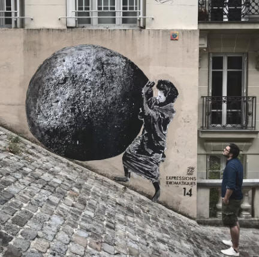

Art in Parisian Culture
| Culture (French) | Culture (English) | Food | Art | Museums | Fashion | Architecture | Festival of Music | Contact Us |
Paris, the City of Art and Culture, is known for its dense cultural and artistic network, with museums, architecture, history, music, and even the town design telling stories and surrounded by myths and anecdotes. From 1900 until about 1940, Paris was a thriving center of artistic activity that provided unparalleled conditions for the exchange of creative ideas. The capital of the arts, the City of Light, is universally recognized as one of the world's most beautiful cities, possessing an enormous cultural richness.
In recent years, Paris has been cultivating a new allure in the art world, with new arst foundations, fresh outposts for major galleries, and the city's vibrant cultural scene. This has contributed to the city's ongoing reputation as a hub for artistic expression and innovation. The art scene in Paris is constantly evolving, offering a diverse range of experiences for both locals and visitors alike. Whether it's exploring the world-renowned Louvre Museum, strolling through the charming streets lined with art galleries, or attending a cutting-edge contemporary art exhibition, there is always something new and exciting happening in the art world of Paris.